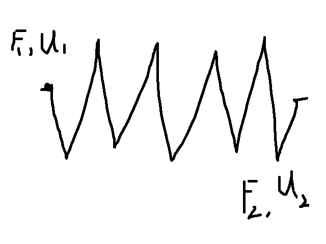
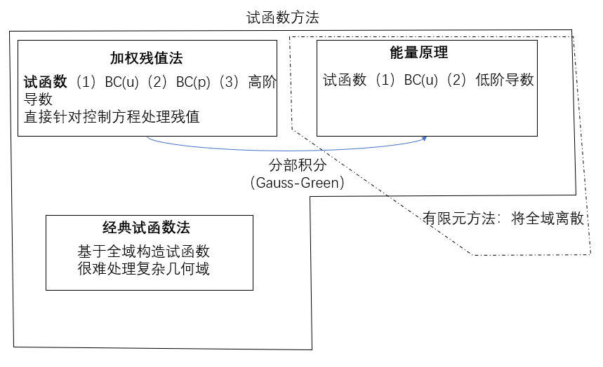
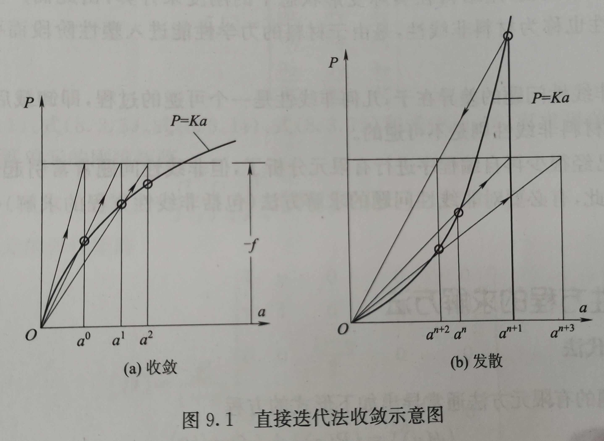
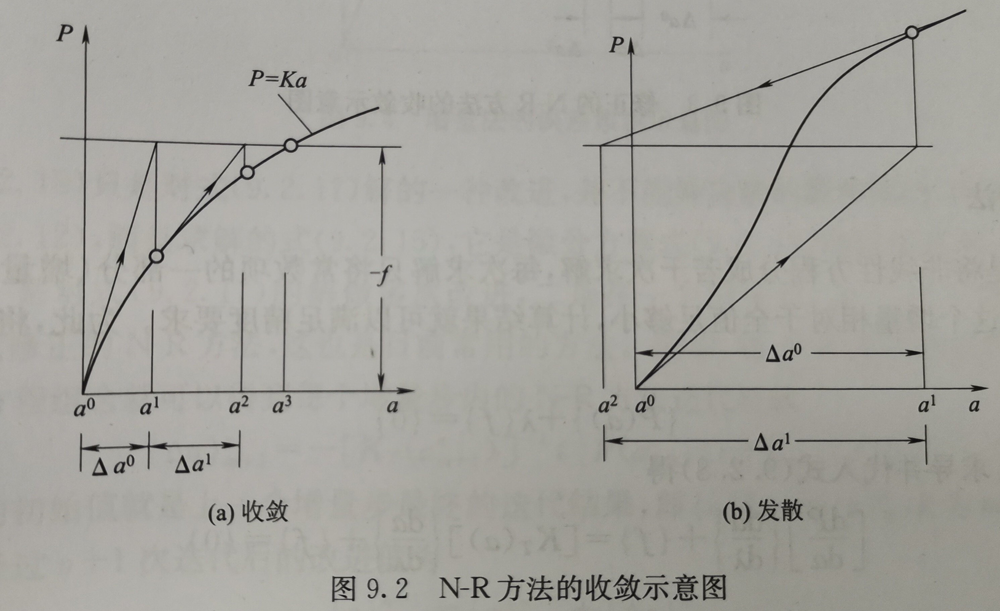
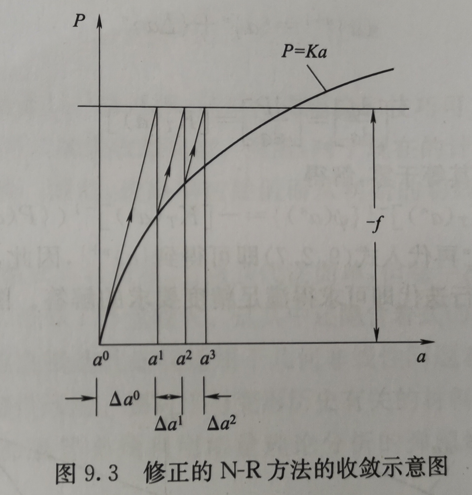
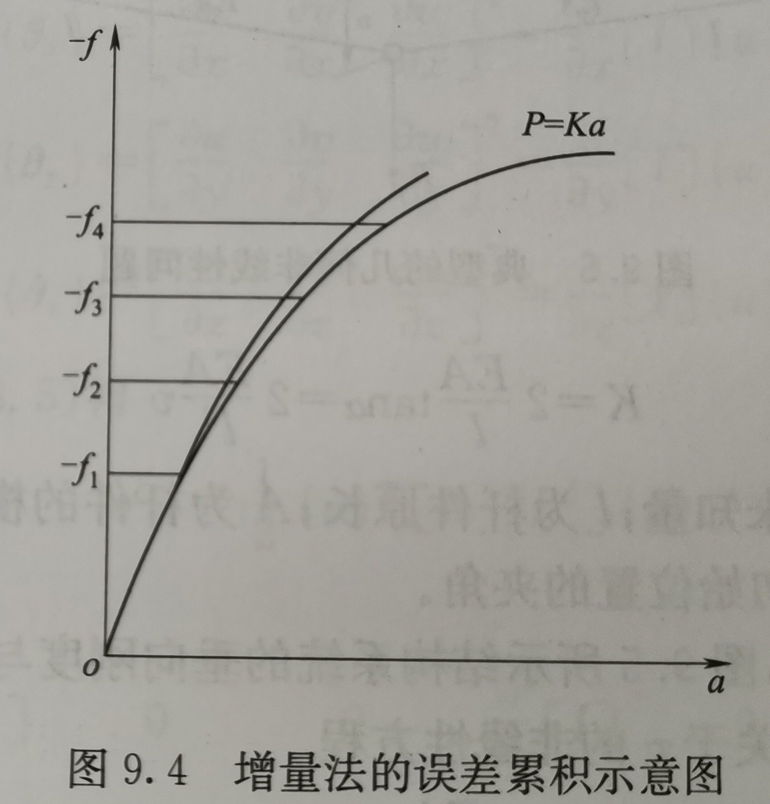

简介
力学的分类
描述航天器：
- 刚体：描述姿态
- 变形体：对姿态的耦合和影响
- 质点：描述轨道
力学的分类：
- 质点力学：使用牛顿三大定律求解
- 刚体力学（理论力学）：牛顿三大定律；刚体转动的牛顿方程（动量矩方程）
简单形状变形体：
- 几何变形
- 力的平衡
- 物理本构方程
复杂形状变形体（弹性力学）：
- 几何变形
- 力的平衡
- 物理本构方程（材料行为）
弹塑性力学：
- 几何变形
- 力的平衡
- 物理本构方程（材料行为）
微分方程的求解
解析法
差分法
使用差分代替微分
$$\frac{d^2u}{dx^2}=\frac{u_{i-1}-2u_i+u_{i+1}}{\Delta l^2}$$
试函数法
- 选择试函数使其满足边界条件
- 带入控制方程使试函数残差最小
函数逼近问题
- 基于全域，使用傅里叶级数逼近。这种方法对于3D问题很难求解。
- 基于子域，分段展开。分片函数逼近：几何->几何离散->基本构件（单元）
弹性力学
弹簧的力学分析原理

$$ \left[\begin{matrix}k & -k \\ -k & k\end{matrix}\right] \left[\begin{matrix}u_1 \\u_2\end{matrix}\right] = \left[\begin{matrix}F_1 \\F_2\end{matrix}\right] \tag{1} $$弹性力学
弹性力学平面问题
为了保持边界位移的连续性，假设单元内任意一点的位移为其坐标的线性函数，这样边界的变化就是线性的。
形函数：任意一点的位移可以用单元节点的位移表示，系数称为形函数。
单元的应力和应变都是常数。
弹性力学的变形体假设
连续、均匀、各向同性、线弹性、小变形
指标记法
$$F_i = [F_1,F_2,F_3]$$
$$\sum_{j=1}^{i}a_{ij}x_j=b_i\ \Rightarrow\ a_{ij}x_j=b_i$$
Voigt标记（将高阶自由指标张量写成低阶张量）
三大类变量和三大类方程
三大类变量：位移、应力、应变
三大类方程：几何方程、平衡方程、无理方程
平面问题的平衡方程
力平衡方程
- 力平衡
- 力矩平衡
几何方程
$$\left\{\begin{array}{lr}\epsilon_{xx}=\frac{\partial{u}}{\partial{x}}&\\ \epsilon_{yy}=\frac{\partial{u}}{\partial{y}} &\\ \gamma_{xy} = \frac{\partial u}{\partial y}+\frac{\partial u}{\partial x}\end{array}\right.\Rightarrow 指标形式（约定\epsilon_{ij}=\frac12\gamma_{ij}\ (i\neq j)）：\epsilon_{ij}=\frac12(u_{i,j}+u_{j,i})$$物理方程
$$ \left\{\begin{array}{lr} \epsilon_{xx}=\frac1E(\sigma_{xx}-\mu\sigma_{yy}) \\ \epsilon_{yy}=\frac1E(\sigma_{yy}-\mu\sigma_{xx}) \\ \gamma_{xy}=\frac1G\tau_{xy} \end{array} \right. \Rightarrow 指标形式: \epsilon_{ij}=C_{ijkl}\sigma_{kl} $$边界条件
- 位移边界$S_u$
- 力边界$S_p$
无边界区域对应（力为0的边界）
典型问题
平面纯弯梁的描述
3D问题
$$ \left\{\begin{array}{lr} 位移（3个）\\应力（9个）\\应变（9个） \end{array} \right. \stackrel{}{\Rightarrow} \left\{\begin{array}{lr} 位移（3个）\\应力（6个）\\应变（6个） \end{array} \right. (三组剪应力应变互等) $$| 维度 | 1D | 2D | 3D |
|---|---|---|---|
| 平衡方程 | 1 | 2 | 3 |
| 几何方程 | 1 | 3 | 6 |
| 物理方程 | 1 | 2 | 3 |
| 边界条件（几何） | 1 | 2 | 3 |
| 边界条件（外力） | 1 | 2 | 3 |
张量
坐标变换
$$ \left[\begin{matrix}x^{(2)} \\ y^{(2)}\end{matrix}\right]= \left[\begin{matrix}cos(x^{(2)},x^{(2)}) & cos(x^{(2)},y^{(1)}) \\ cos(y^{(2)},x^{(1)}) & cos(y^{(2)},y^{(1)}))\end{matrix}\right] \left[\begin{matrix}x^{(1)} \\ y^{(1)}\end{matrix}\right] = \left[\begin{matrix}cos\alpha & sin\alpha \\ -sin\alpha & cos\alpha)\end{matrix}\right] \left[\begin{matrix}x^{(1)} \\ y^{(1)}\end{matrix}\right] $$$\alpha$为两坐标系转动夹角,T为转置矩阵$\left[\begin{matrix}cos\alpha & sin\alpha \\ -sin\alpha & cos\alpha)\end{matrix}\right]$
张量存在不变量，不随坐标系的变化而变化，这些变量是重要的分析对象
二阶张量$\sigma^{(2)}=T\sigma^{(1)}T^T$
虚功原理和最小势能原理
弹性变形体力学方程的求解方法
- 直接求解：解析法、半解析、差分
- 间接求解
- 加权残值法（伽辽金加权残值、残值最小二乘法）
- 虚功原理
- 最小势能原理
- 变分方法
简介求解的关键是1.试函数的选择，2.试函数带入原方程求误差
伽辽金加权残值法
试函数：将满足边界条件的试函数$\phi_i(x)$组合为新的试函数$\hat{v}(x)=c_1\phi_1(x)+…+c_n\phi_n(x)$,$c_i$为待定系数
伽辽金法的权值为试函数
残值: $\int_\Omega{w_{t_i}R(x,y,z)d\Omega}$
$w_{t_i}=\phi_i$
残值最小二乘法的权值为$w_{t_i}=1$
如何降低试函数对高阶导数及边界条件的要求
将三大类变量（位移、应力、应变）代换为一类变量（位移）
弹性问题加权残值法的难点：
- 试函数要满足所有边界条件 -> 只满足位移边界
- 试函数最高阶导数较高（梁弯曲问题要求4阶导数存在，一般弹性问题要求2阶导数存在）-> 虚功原理和最小势能原理可以将最高阶导数降低一半
虚功原理
虚功原理：虚功总和为0
$$\delta W-\delta U =0（W外力虚功，U内力虚功）$$
截面惯性矩$I=\int{y^2dA}$
若试函数为$\hat{v}(x)=C_1sin(\frac{\pi x}{l})$，虚位移场为$\delta\hat{v}(x)=\delta C_1sin(\frac{\pi x}{l})$
最小势能原理：$min(U-W)$
能量原理
加权残值法的试函数满足位移边界条件和力边界条件，最终加权残值满足控制方程。
能量方法的试函数只满足位移边界条件，但可以证明其最终的求解结果也满足力边界条件和控制方程
有限元方法
基于试函数的经典方法与有限元方法
有限元方法的思路：几何→几何离散→基本构件→集成→几何
离散方法
- 自然离散→规则桁架
- 逼近离散→连续体
- 混合离散
有限元方法的步骤
- 几何离散
- 单元研究
- 单元继承
- 边界条件处理
- 计算支反力
- 计算其他物理量
单元研究：
- 节点
- 节点基本变量：坐标、位移、力
- 单元
- 三大类变量描述：刚度方程→多项式从低阶到高阶，待定系数个数与节点自由度对应
- 位移场：$u(x)=Nq^{e}$
- 应变场：$\epsilon(x)=B(x)q^{e}$
- 应力场：$\sigma=DB(x)q^{e}$
- 应变能：$U=\frac12q^{e^T}K^eq^e$
- 外力功：$W=p^{e^T}q^e$

形函数的计算
单元节点的自由度为4
位移场函数$v(x)=a_0+a_1x+a_2x^2+a_3x^3$
单元节点条件
$v(x)=N(\xi)q^e$
分布力转换为节点处的等效载荷
常见平面单元
平面三节点单元
应变场为常数
应力场为常数
位移场为完全线性函数($u(x,y)=a_0+a_1x+a_2y$,$v(x,y)=b_0+b_1x+b_2y$)
基于整体坐标建立节点位移，没有坐标变换问题
对于应变梯度大的区域，加密或高阶单元
平面四节点单元
位移场为完全线性+交叉项函数（$u(x,y)=a_0+a_1x+a_2y+a_3xy$）
应变场为不完全线性:
应力场：$\sigma=D\epsilon$
空间单元
空间四节点单元（与平面三节点单元类似）
应变场为常数
应力场为常数
没有坐标变换问题
空间8节点正六面体单元与平面4节点单元类似
参数单元
基准单元：基准坐标系； 物理单元：物理坐标系
需要进行几种映射：坐标函数映射、偏导数映射、面积（体积）映射
收敛性
亚参元和等参数单元保证收敛；超参数单元不保证收敛
亚参元：几何形状插值函数阶次<位移插值函数阶次
等参数单元：几何形状插值函数阶次=位移插值函数阶次
形函数和刚度矩阵的性质
形函数
- $N_i$表示i节点位移为1，其他节点位移为0时的单元位移场函数
- $\sum_{i=0}^{n}N_i(x)=1$表明其能描述刚体位移
刚度矩阵
- 对角元素$k_{ii}$表示要使i节点产生单位位移($u_i=1$)，其他节点位移为0时，需要在节点i施加的力
- 非对角元素$k_{ij}$表示要使j节点产生单位位移($u_j=1$)，而其他节点位移为0时，需要在节点i施加的力
- 单元刚度矩阵是对称的
- 单元刚度矩阵是半正定的
- 单元刚度矩阵奇异（行列式=0）
总体刚度矩阵
- 对称
- 奇异
- 半正定
- 稀疏
- 非零元素带状分布
边界条件的处理与支反力的计算
- 直接法
- 置一法（针对($\bar{q_r}=0$)）
- 乘大数法（针对($\bar{q_r}=\bar{u}$)）
- 罚函数法（大刚度的弹簧）
位移函数的构造与收敛性要求
收敛性准则：
- 完备性要求（针对单元内部:常应变项与常位移项）。如果在势能泛函中所出现的位移函数的最高阶导数是m阶，则有限元解答收敛的条件之一是单元内位移场函数的试函数至少是m阶多项式。
- 协调性要求。如果势能泛函中位移函数最高阶是m阶，则位移势函数在单元交界面上必须具有直至m-1阶连续倒数
位移函数参数个数与节点自由度（DOF）相等。 -》 唯一性
C0与C1单元
C0单元：势能泛函中位移函数出现的最高阶导数是1阶，在单元交界面上具有0阶连续导数，只要求位移连续
一般杆单元，平面问题单元，空间问题单元都是C0单元。
C1单元：势能泛函中位移函数出现的最高阶导数是2阶，在单元交界面上具有1阶连续导数
梁单元，板单元，壳单元都是C1单元。
单元拼片实验
单元位移函数满足完备性要求->单元是完备的（容易满足）
单元位移函数满足协调性要求->单元是协调的（C1型单元不容易满足）
单元位移函数满足完整性和协调性要求->协调单元
非协调单元：某些情况下，可以放松对协调性的要求，只要单元通过拼片试验，解答仍收敛于正确解，这种单元称为非协调单元
近似解$|q_{appr}|<|q_exact|$精确解
控制误差和提高精度的h方法和p方法
h方法（high density）加密单元。数值稳定性和可靠性好，但收敛较慢，效率低
p方法（polynomial）增加单元基地函数阶次。收敛性优于h方法，但数值稳定性差。
自适应方法：利用上一步计算结果修改有限元模型，计算量小，精度高。对给定自由度求最有玩咯
子结构与超级单元
结构的重复性：几何空间上，采用子结构；计算时间上，采用超级单元
非线性分析
结构振动的有限元分析
基本原理：变形体存在固有频率和振动模态
三大类变量：位移$u_i(\xi,t)$、应变$\epsilon_{ij}(\xi,t)$、应力$\sigma_{ij}(\xi,t)$
基本方程：
平衡方程：由DAlembert原理$\sigma_{ij,j}(t)+\bar{b_i}(t)-\rho\ddot{u_i}(t)-v\dot{u_i}=0$
几何方程：与普通分析一致
物理方程：与普通分析一致
边界条件：与普通分析一致
初始条件：
$u_i(\xi,t=0)=u_i(\xi)$
$\dot{u_i}(\xi,t=0)=\dot{u_i}(\xi)$
单元的节点位移矩阵：$q_t^e(t)=\left[\begin{array}{lr}u_1(t) & v_1(t) & w_1(t)&… & u_n(t) & v_n(t) & w_n(t)\end{array}\right]^T$
位移插值函数：$u^e(\xi,t)=N(\xi)q_i^e(t)$
$\dot{u}^e(\xi,t)=N(\xi)\dot{q}_i^e(t)$
$\ddot{u}^e(\xi,t)=N(\xi)\ddot{q}_i^e(t)$
方程：$M^e\ddot{q}_i^e(t)+C^e\dot{q}_i^e(t)+K^eq_i^e(t)=P_t^e(t)$
单元质量矩阵：$M^e=\int_\Omega\rho N^TNd\Omega$
单元阻尼矩阵：$C^e=\int_\Omega v N^TNd\Omega$
单元刚度矩阵：$K^e=\int_\Omega B^T DBd\Omega$
力矩阵：$P_t^e=\int_\Omega N^T\bar{b}d\Omega+\int_{S_p}N^T\bar{p}dA$
对于无阻尼(v=0)自由(p=0)振动:$M\ddot{q}+Kq=0$，这个方程的解的形式为$q_t=\hat{q}e^{iwt}$。带入到方程中得到：$(-w^2M\hat{q}+K\hat{q})e^{iwt}=0$，即$(K-w^2M)\hat{q}=0$。方程由非零解的条件为$|K-w^2M|=0$。
质量矩阵：一致质量矩阵；集中质量矩阵（将一直质量矩阵行/列集中到对角线）
非线性方程的求解
- 直接迭代
- Newton-Raphson(NR)迭代。分步逼近，在每个载荷段内进行非线性方程的迭代，特点：在迭代中，非线性方程变为线性方程
- 改进的NR方法
传热问题
传热问题的控制方程
Fourier传热定律、能量守恒定律
三类边界条件
给定的温度分布（第一类）、给定热流密度（第二类）、给定对流换热系数（第三类）
几个常见的问题
线性分析与非线性分析
线性分析：若K为常数矩阵，则外载荷与系统响应之间为线性关系
非线性：K变化
非线性：材料非线性、几何非线性（大变形、大转动）、边界条件非线性（接触）
求解方法：
- 隐式求解。将分析过程分为一系列增量步，在每个增量步迭代至合理解。
- 显式求解。显式地从上一个增量步推算动力学平衡方程
一阶/二阶 完全/减缩

概念
线性单元仅在角点处布置节点，在各方向采用线性插值。
二次单元不仅在节点处，在每边的中点也有节点，在各方向采用二次插值
完全积分：当单元具有规则形状时，所用高斯积分点数目足以对单元刚度矩阵多项式进行精确积分。
减缩积分：比完全积分每个方向少一个积分点（只有四边形和六面体单元才能使用减缩积分）。
可能出现的问题
剪力自锁：存在于所有的线性完全积分单元中
原因：线性单元的边无法弯曲，使得应变作用下产生剪切变形而无法弯曲变形，单元过于刚硬。
改进:使用二次单元
沙漏：线性减缩积分单元由于沙漏问题，过于柔软
原因：在单元变形时，积分点处应力分量也可能为0，没有产生应变能，即这种弯曲是零能模式。这种零能模式会在网络中扩展。
二次减缩积分也存在沙漏，但在正常网格中不会扩展。
体积锁死：本应产生体积变化，却未变化
条件：完全积分，材料几乎不可压缩（v=0.5）
改进：细化网格
注意事项
- 线性完全积分单元容易出现剪切自锁和体积自锁，一般不使用
- 如果存在应力集中，需要计算较精确的应力，建议使用二阶完全积分单元
- 二阶减缩积分单元既可以较精确的模拟应力，又可以较准确的模拟小变形，因而是应力/位移模拟的最佳选择
- 如需要模拟大变形或接触分析，采用线性减缩积分是最好的选择。但应细化网络来避免沙漏，在厚度方向应大于4个单元
- 静力结构分析使用二阶完全积分单元。非线性分析/接触分析使用线性减缩积分单元
- 只有确信载荷只会在模型中产生很小的弯曲时，才能使用线性完全积分单元
- 在受轴向和剪切载荷时，线性完全积分单元表现很好
- 线性减缩积分单元能很好地承受扭曲变形
- 受弯：二次单元优于线性单元；； 受扭：线性单元优于二次单元
完全各向异性材料：$C_{ij}$，21个独立分量
各向同性材料的刚度系数：
广义变分原理
约束变分原理
拉格朗日乘子法
对于一个使泛函$\Pi(\textbf{u})$取驻值的问题，如果其场函数$\textbf{u}$需满足的附加条件为：
$${C(\textbf{u})}={0}\ (在域\Omega内)$$
则将其引用泛函$\Pi(\textbf{u})$得到一修正的泛函：
$$\Pi^{*}(\textbf{u,}\lambda)=\Pi(\textbf{u})+\int_{\Omega}\{\lambda\}^T\{C(\textbf{u})\}d\Omega$$$\lambda$为一组独立的坐标函数，称为拉格朗日乘子。
拉格朗日乘子会导致待定系数的增加，从而增加了计算量。
罚函数法
罚函数法与拉格朗日的区别是引入附加条件的形式不同，拉格朗日乘子法引入是附加条件的原型，即${C(\textbf{u})}={0}$，而罚函数法则是附加条件乘积的形式。
$$\{C(\textbf{u})\}^T\{C(\textbf{u})\}=\{C_1^2(\textbf{u})\}+\{C_2^2(\textbf{u})\}+...+\{C_n^2(\textbf{u})\}$$当附加条件得到满足时，上式为0，否则它大于0.显然上式的变分在满足:$\delta({C(\textbf{u})}^T{C(\textbf{u})})=0$的条件下是最小的。因此，罚函数法利用一个充分大的系数将附加条件以乘积的形式引入泛函。
$$\Pi^{**}(\textbf{u})=\Pi(\textbf{u})+\alpha\int_\Omega\{C(\textbf{u})\}^T\{C(\textbf{u})\}d\Omega$$$\alpha$被称为罚函数，若泛函本身是极小值问题，则$\alpha$取正数。
罚函数选择很重要，如何选择合适的$\alpha$不易。
非线性问题的求解方法
直接迭代法
每次迭代需要重新计算刚度矩阵并求逆，计算量较大。（割线刚度法）
收敛性：对刚度退化的系统，直接迭代法收敛。对刚度硬化的系统，直接迭代法不收敛。

牛顿-拉夫森方法
每次迭代需要重新计算系数矩阵并求逆，计算量较大。（切线刚度法）

修正的牛顿-拉夫森方法
迭代过程不需要重新计算系数矩阵，只计算一次。

增量法

求解线性方程组的迭代法
雅可比迭代法
每次迭代全部采用上次的迭代结果
高斯-赛尔德迭代法
超松弛迭代法
改善了高斯-赛尔德迭代法的收敛性
单元类型
一维单元
拉格朗日单元
在n个节点上的函数值连续
Hermite单元
在节点上的函数值和导数都连续
高阶Hermite单元
在节点上的函数值和高阶导数连续。
求解算法中显式和隐式的区别
隐式和显式有限元的最大区别在于是否迭代，所有的物理量是否在同一时刻获得。
采用隐式迭代求解平衡方程（位移、速度、加速度），不管是否采用隐式与显式的方式（前向、后向欧拉算法）求解本构方程（应力、应变），都叫做隐式有限元。
对于本构方程的求解，通常分为前向和后向欧拉算法。对于后向欧拉算法求解弹塑性问题，所有的物理量（包括等效塑性应变增量、N+1迭代步的应变和应力以及相关依赖于solution的状态变量）均是同时求解获得，因为涉及到多个物理量，而通常情况下他们是相互依赖、相互成为函数，所以必须通过牛顿迭代同时求解几个方程（如采用试应力方程、屈服函数径向返回算法（对于各向异性，也叫回映算法，最近点的投射算法）联合求解等效塑性应变增量）。对于前向欧拉，直接由N时刻的应力和应变求出N+1时刻的应力和应变，无需迭代。
https://blog.csdn.net/wu_nan_nan/article/details/53173302
前向欧拉（显式欧拉）：条件稳定.后向欧拉（隐式欧拉）：无条件稳定。
实际应用中，隐式欧拉需要求解隐式方程，通常也是使用逼近的方法（例如，Newton-Raphson）求解，因此实际的隐式欧拉方法并不是无条件稳定的。
对于平衡方程的求解，通常分为隐式和显式有限元算法。对于隐式有限元算法，由应力平衡方程+边界条件变分之后获得的刚度方程KU=F，隐式求解必须引入雅可比矩阵（二次收敛、只影响计算速率、不影响数值精度；K又称为雅可比），其是实时更新的，是N+1时刻的应力、应变以及状态变量（如损伤内变量）的函数，隐式求解是很robust的，确保了计算精度，但是不足之处在于计算非常expensive，每次迭代都要计算K的逆矩阵，也容易产生数值收敛性问题，目前解决的方法有弧长法、粘性阻尼法等，个人认为粘性阻尼法效果最好。
对于显示算法，采用时间积分，用t+1时刻的积分点应力、应变，获得t+1时刻的节点位移，无需迭代求解，也不需要雅可比矩阵（应力对应变偏导数）；如果硬是要有，连续雅可比，基于本构模型而不是刚度方程推导近似的连续雅可比。对于显示算法，单元高斯积分点应力、应变的求解可用前向或者后向欧拉方法，然后通过时间积分求取节点位移。本质上，平衡方程中位移的迭代求解与本构方程中的应力、应变求解没有关联，这点很容易造成误解，很多时候将前、后欧拉算法视为显式和隐式的区别，大大错误。通常应用较广的显示算法纽马克法、威尔逊-sita法，其中改变纽马克法中的两个参数，可以实现隐式与显式求解，其中alpha=0.5和beta=0是中心差分法(二阶精度)。目前一个大的误区认为只有显示算法可以求解动力学问题，隐式只能求解准静态问题（如低速冲击），alpha=0.5和beta=0.25就是隐式，所有的物理量在t+1时刻同时求解，通常ABAQUS软件中所说的隐式动力学求解采用了斯坦福大学Hilber、HUGHES院士（现在德克萨斯大学奥斯丁分校）和加州大学伯克利分校Taylor院士提出的无条件稳定隐式差分算法，可以求解低速动力学问题，缺点是不适合含阻尼的求解、计算效率不高；alpha=0.5和beta=0时的纽马克法更适合求解动力学问题，主要原因在于比隐式求解计算效率更高，不足之处在于其是条件稳定，时间增量过大位移解容易震荡，根本原因是差分算法的条件稳定导致的，时间增量必须非常小（其值越大，一方面不稳定、另一方面计算误差也更大），其依赖于波速、弹性模量和最小单元网格尺寸，这是显式算法计算最耗时的地方。相对于隐式算法，显式算法的功能更强大，通常计算依赖于率的变形和应力，也可以求解稳态问题，如alpha=0.5和beta=0时，对于刚度方程中引入阻尼矩阵后，叫做动态松弛法，可以解决静力学问题的一些稳态问题（如重力、预应力引起的初始应力）。此外，一些准静态的剪切自锁问题，本质上有解，但是用牛顿法求解失效，中心差分引入质量矩阵后，可以获得正常的解。需要注意的是，时间积分算法通常采用Lumped集中对角质量矩阵而不是一致质量矩阵，以提高计算效率。总体来说，由于计算效率的问题，隐式时间积分算法ABAQUS-Standard特别适合于低速冲击问题；对于高速冲击问题，由于存在不连续非线性接触的动响应过程，隐式算法解决不好，使用显式时间算法ABAQUS-Explicit更好。此外，对于瞬态和稳态热传导问题，半离散的抛物线方程，中心差分法可以较好获得温度分布。
对于依赖于率的粘塑性问题（对于本质上的粘性材料），与弹塑性材料的根本区别在于，一般来说是一致性条件不满足（排除弹塑性材料在高温下的软化问题，对于这种问题，屈服条件也可以满足），即屈服条件不满足，N+1时刻的物理量不用回映到N+1时刻的屈服面上，粘塑性模型成为过应力模型，显示和隐式算法都可以求解。对于依赖于率的本构模型，其可解决模拟高速冲击、爆炸、弹道射击问题时存在的动态应变局部化问题（对于动态问题，平衡方程丧失双曲线特性；对于静态问题，平衡方程失去椭圆性），解决网格尺寸效应，其实质上是引入了适当的阻尼迟滞效应。需要注意的是，对于大变形(又称为有限变形)问题，Cauchy应力率和速度梯度（包括客观和对称的扭曲张量率D、不客观和反对称的spin旋转张量W两个部分）均是不客观的，为解释刚体旋转（如纯剪切变形就包含刚体旋转），在共旋坐标系下面求解真实应力和应变，应力和应变积分求解的时候应首先求解客观性的Jaumann应力率(相对于真实应力，空间坐标系)，相对于Second Piola-Kirchhoff应力是Truesdell率（材料坐标系）。ABAQUS软件对于大变形问题已经做了旋转。
对于一些耦合场问题，由于计算量非常大，同时要求解太多物理量，如热-流-固耦合，要求解位移、压力、温度，采用纯隐式算法或显式算法基本不太获得收敛或准确的解，这时候可采用混合的隐式与显式有限元格式mixed implicit-explicit partitoning方法，将刚度矩阵和阻尼矩阵分成两个部分，在同一区域采取不同算法，提高计算效率和精度、稳定性和收敛性。